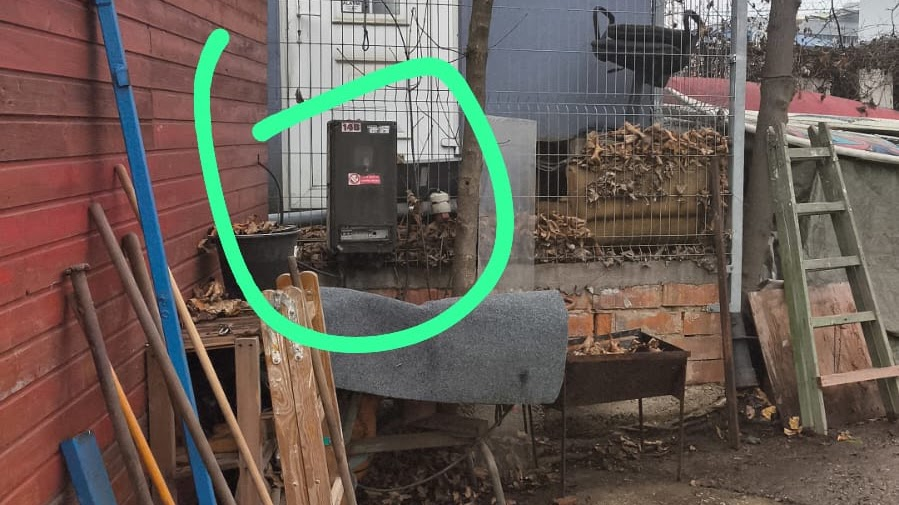
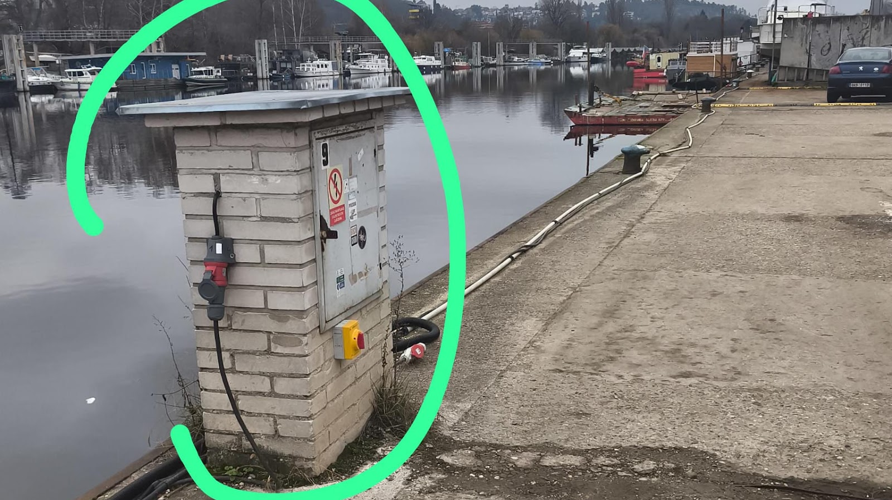

Pană de curent – prim ajutor
Întreruperile de curent în casele cu bărci sunt mai frecvente decât într-un apartament din motive de capacitate și mai multe cerințe datorită vremii, în special în zilele foarte calde sau foarte reci.
Dacă sunteţi în stare să acţionaţi pe o placă electrică, verificaţi panourile ca pe această imagine. IMPORTANT: Purtaţi întotdeauna pantofi cu tălpi de cauciuc când atingeţi orice panouri electrice sau aparate!
A se vedea mai jos și ne contactați în caz de nevoie!

Toate întrerupătoarele ar trebui să fie activate. (cu excepţia cazului în care există un semn, bandă sau ceva neobişnuit).

Panourile electrice sunt pe doc, asemănătoare cu asta. Unele sunt cu spatele la spate.

Verificaţi aceste poziţii, lângă poarta albastră.

Acestea pot fi, de asemenea, împiedicate.

La începutul locului de parcare, verificaţi dacă numărul 9 are toate întrerupătoarele (


Numărul 9 în interior (aveți nevoie de o cheie sau ceva care rotește stâlpul pătrat)

Mai departe, numărul 8 are câteva comutatoare care trebuie să fie activate.

Verifică astea înăuntru. Întotdeauna verifică dacă nimeni nu lucrează în aval!
IMPORTANT: VĂ RUGĂM SĂ RAPORTAȚI CARE COMUTATOR A FOST DEZACTIVAT. FĂ O POZĂ ÎNAINTE ŞI DUPĂ.
Această pagină a fost tradusă automat din ghidul în limba engleză. În caz de neclarități, versiunea în engleză este cea valabilă. Originalul în engleză